Profiles of the members of the Trust — their education, careers and service.
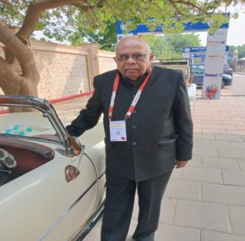
| Date of birth | 15/05/1947 |
|---|---|
| Address | Bengaluru |
| Parents | Late Sri Shekharappa, Late Smt. Basamma |
| Spouse and children | Smt. Pushpa Palaksha; Praveen Palaksha, Pradeep Palaksha |
| Phone / email | 9945152521 |
| Education | MBBS, Government Medical College, Ballari DPM, Karnataka Medical College, Hubballi — specialisation in Psychiatry |
| Position | Retired psychiatrist. Retired Deputy Chief of Medical Services, HAL Hospital, Bengaluru; now in private practice. |
| Service | Past President of:
|
| Awards |
From the Indian Association of Occupational Health:
|
| Other service | Trustee, Guru Shishya Sangama Public Charitable Trust (R), Nyamathi |
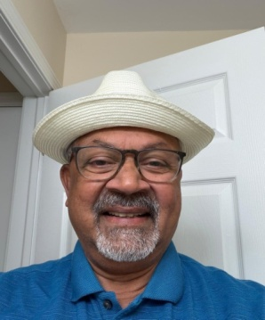
| Date of birth | 26 September 1951 |
|---|---|
| Address | United States of America |
| Parents | Dr. Shekharappa, Basamma |
| Spouse and children | Mythili Divakar; Ajay, Vija |
| Education | MBBS, Mysore Medical College MD, Albany Medical Center, Albany, New York, USA |
| Position | Primary Care Physician (Internist) |
| Achievements | 8th rank in the university in the first year of medical school. Many publications in American and international medical journals. |
| Other | Married with three children and two grandchildren. Interests: sports and reading novels. |
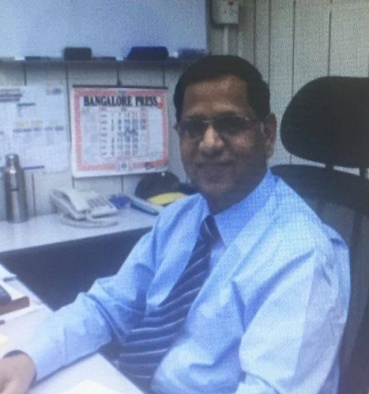
| Date of birth | 16/09/1953 |
|---|---|
| Address | Bengaluru |
| Parents | Smt. Ujjamma, Sri M. G. Veerappa Patel |
| Spouse and children | Ratna Gowda; Santosh Gowda, Harsha Gowda |
| Phone / email | Rudrappagowda1953@gmail.com |
| Education | B.Sc., B.E. (Electronics & Communication) |
| Position | Private business |
| Service |
|
| Awards | Best Engineer of the Year 1999, Saudi BinLaden Group, Saudi Arabia |
| Other service | President, Guru Shishya Sangama Public Charitable Trust (R), Nyamathi |
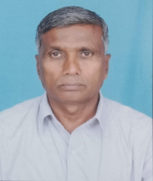
| Date of birth | 06/09/1954 |
|---|---|
| Address | Ganjeenahalli, Chatnahalli (PO), Nyamathi Taluk |
| Parents | Sri Sogilu Rudrappa, Smt. Veeramma |
| Spouse and children | Smt. Jayamma; Manu S. B., Madhu S. B. |
| Phone / email | 9480277028 |
| Education | M.A. (Kannada), B.Ed., University of Mysore |
| Position | Retired lecturer, Ganjeenahalli |
| Literary work | Served as editor of Nyamathi Pandit Prabhanna’s Kannada–Kannada dictionary. Author of Halli Jeeva and Shivasiri. |
| Awards | Best Teacher Award, Department of High School Education |
| Other service | Served as an academic resource person for the Department of Education. Trained under the Government of India’s Centre for Cultural Resources and Training. Served as President of the Kannada Sahitya Parishat, Honnali Taluk. Has lectured at many seminars. Serving as Vice-President of the executive committee of Guru Shishya Sangama Public Charitable Trust (R), Nyamathi. |
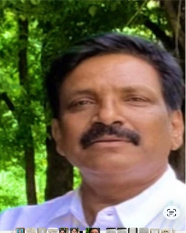
| Date of birth | 01/07/1961 |
|---|---|
| Address | Chinnikatte Village, Nyamathi Taluk, Davanagere District — 577225 No. 09, Good Earth Enclave, Patel Sanjeevappa Road, off Uttarahalli Road, Kengeri, Bengaluru — 560060 |
| Parents | Late Sri B. M. Basappaiah, Smt. Veeramma |
| Spouse and children | M. C. Roopa (wife); Trilok B. Malimutt (son); Saakshi (daughter-in-law) |
| Phone / email | 9880110360 renubmit@gmail.com |
| Education | B.B.M., CA (Inter) |
| Position | Auditor and tax consultant; agriculturist |
| Current role | Secretary, Guru Shishya Sangama Public Charitable Trust, Nyamathi |
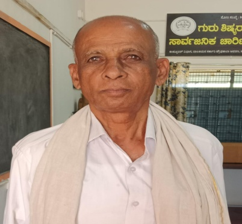
| Date of birth | 20/08/1955 |
|---|---|
| Address | Kodikoppa Village, Nyamathi Taluk |
| Parents | Sri Halappa, Smt. Basamma |
| Spouse and children | Late Yashodhamma; Shilpa, Sheela |
| Phone / email | 8762935904 |
| Education | S.S.L.C. |
| Position | Progressive farmer |
| Service | Has served as President of the Sadhu Veerashaiva Samaja and President of the School Development Committee. Now works as a social worker. |
| Other service | Serving as Treasurer of the executive committee of Guru Shishya Sangama Public Charitable Trust (R), Nyamathi. |
| Date of birth | 12/04/1939 |
|---|---|
| Address | Nyamathi |
| Parents | Sri Halappa, Halamma |
| Spouse and children | Smt. Basamma; Mahesh Gowda H. M. Patel, Sheela, Shanthakumari |
| Education | S.S.L.C. |
| Position | Businessman; owner of Sri Marulu Siddeshwara Motor Service (lorries) |
| Service | Councillor, Nyamathi Town Panchayat |
| Other service | Trustee, Guru Shishya Sangama Public Charitable Trust (R), Nyamathi |
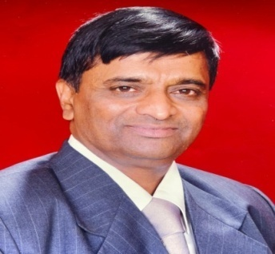
| Date of birth | 23/09/1950 |
|---|---|
| Address | Bengaluru |
| Parents | Late Sri Gurushanthappa, Late Smt. Kotturamma |
| Spouse and children | Smt. Ambika; Vinay, Ravi |
| Phone / email | 9448390222 |
| Education | M.V.Sc., Ph.D. |
| Position | Dean, Veterinary College, Shivamogga |
| Current role | Retired veterinarian, Department of Animal Husbandry, Shivamogga |
| Other service | Trustee, Guru Shishya Sangama Public Charitable Trust (R), Nyamathi |
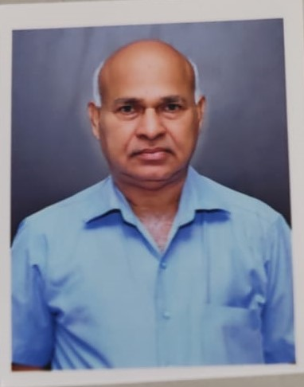
| Date of birth | 22/07/1956 |
|---|---|
| Address | Kodachagondanahalli, Nyamathi Taluk, Davanagere District |
| Parents | Basappa, Iramma |
| Spouse and children | Late Radha; Pramila; Prashant K. M., Jyothi K. M. |
| Phone / email | 9945550038 |
| Education | Diploma in Metallurgy |
| Position | Industrialist |
| Service | Rose from Supervisor to Managing Director at Naetek Ferrocastings (P) Ltd, Machenahalli, Shivamogga. |
| Awards | Global Research Foundation certificate for international excellence |
| Other service | Trustee, Guru Shishya Sangama Public Charitable Trust (R), Nyamathi |
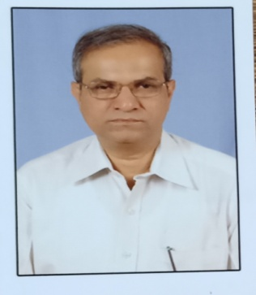
| Date of birth | 10/04/1953 |
|---|---|
| Address | Bidaragadde, Honnali Taluk, Davanagere District — 577217 |
| Parents | Dundyappa, Parvathamma |
| Spouse and children | Hemalatha K. M.; Harsha B. M., Seema B. M. |
| Phone / email | 9945011822 |
| Education | M.A. (Economics) |
| Position | Retired Additional Registrar of Co-operative Societies; retired Secretary, Co-operative Election Commission |
| Service |
|
| Other service | Srishaila Mallikarjuna Charitable Public Trust, Bidaragadde, Honnali Guru Shishya Sangama Charitable Trust, Nyamathi |
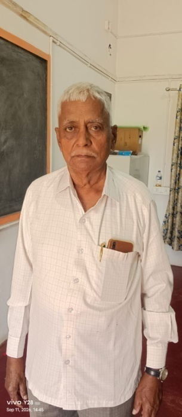
| Date of birth | 25/11/1950 |
|---|---|
| Address | Arabagatte, Honnali Taluk |
| Parents | Sri Basavappa, Smt. Gowramma |
| Spouse and children | Smt. M. H. Savithramma; A. M. Ganapathi, A. M. Shanmukha |
| Phone / email | 9632313526 |
| Education | Primary school teacher training |
| Position | Retired head teacher |
| Awards | Scouts and Guides Seva Dal |
| Other service | Trustee, Guru Shishya Sangama Public Charitable Trust (R), Nyamathi |
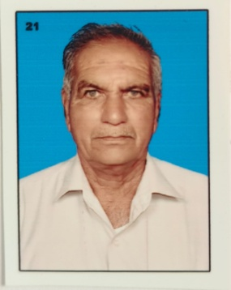
| Date of birth | 01/05/1950 |
|---|---|
| Address | Kyathinakoppa, Chinnikatte (PO), Nyamathi Taluk |
| Parents | Late Sri Hiriyappa Gowda, Late Smt. Girijamma |
| Spouse and children | Smt. Shobha; M. K. Bharath, M. K. Sharath |
| Phone / email | 9740729325 |
| Education | B.A. |
| Position | Director, Agricultural Service Co-operative Society, Chinnikatte Joga |
| Service |
|
| Other service | Trustee, Guru Shishya Sangama Public Charitable Trust (R), Nyamathi |
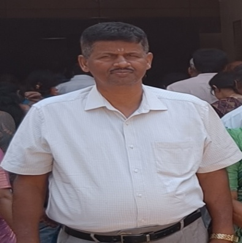
| Date of birth | 04/04/1964 |
|---|---|
| Address | Shikaripura |
| Parents | Basavanyappa D., Parvathamma |
| Spouse | Sujatha |
| Phone / email | 9449204734 |
| Education | LL.B. |
| Position | Advocate, High Court and Sessions Court |
| Other service | Trustee, Guru Shishya Sangama Public Charitable Trust (R), Nyamathi |
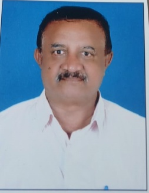
| Date of birth | 04/03/1963 |
|---|---|
| Address | Shivamogga |
| Parents | Late Sri Eshwarappa, Smt. Gowramma, Danihalli |
| Spouse and children | Smt. Indira; Smt. Keerthi, Kum. Inchara |
| Phone / email | 94481441310 |
| Education | B.E. (Civil) |
| Position | Class I contractor |
| Other service | Serving as Treasurer of the executive committee of Guru Shishya Sangama Public Charitable Trust (R), Nyamathi. |
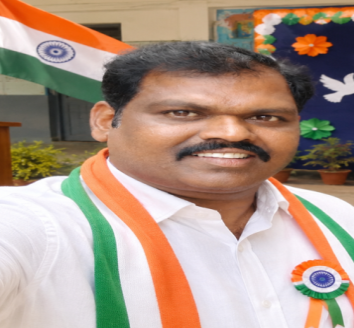
| Date of birth | 06/02/1983 |
|---|---|
| Address | Madanabavi, Nyamathi Taluk |
| Parents | Sri Singappa, Smt. Karibasamma |
| Spouse and children | Smt. Bhanumathi M. K.; Tanuja (daughter), Kaushik (son) |
| Education | B.Tech. in Electronics & Telecommunication Engineering (A.M.I.I. & IETE) Diploma in Electronics & Telecommunication Engineering ITI in Electronics Mechanic |
| Position | Systems Engineer, Onsemi |
| Other service | Serving as Treasurer of the executive committee of Guru Shishya Sangama Public Charitable Trust (R), Nyamathi. |
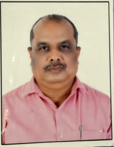
| Address | No. 47, Rajeev Gandhi Nagar Road, Vishwaneedam Post, Sunkadakatte, Bengaluru — 560091 |
|---|---|
| Phone / email | 9844172587 jvachar@jlengg.net |
| Education | B.E. (Mechanical) |
| Position | Industrialist |
| Current role | Serving as Treasurer of the executive committee of Guru Shishya Sangama Public Charitable Trust (R), Nyamathi. |
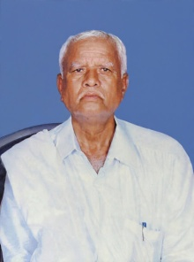
| Date of birth | 15/08/1950 |
|---|---|
| Address | Sogilu Village, Nyamathi Taluk |
| Parents | Prabhuvappa D., Shankaramma |
| Spouse and children | Basamma; Ravi D. R., Manjunatha D. R. (Sub-Inspector, 9535538073; wife Pushpa, daughter Ashvi, son Advik) |
| Phone / email | 9663597540 |
| Education | P.U.C. |
| Position | Agriculturist |
| Current role | Trustee, Guru Shishya Sangama Public Charitable Trust (R), Nyamathi |
| Date of birth | 05/06/19456 |
|---|---|
| Address | Surahonne, Nyamathi |
| Parents | Basappa, Sanna Veeramma |
| Spouse and children | M. V. Sarojamma; M. V. Nagaveni, M. V. Ambika, M. V. Nagaraja |
| Education | S.S.L.C., T.C.H. |
| Position | Retired head teacher |
| Current role | Trustee, Guru Shishya Sangama Public Charitable Trust (R), Nyamathi |
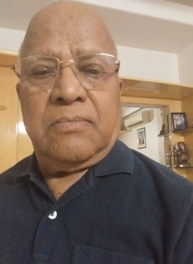
| Date of birth | 23/02/1946 |
|---|---|
| Address | No. 208, 2nd Main, Mahalakshmi Layout, Kamalammana Gundi Road, Bengaluru — 560086 |
| Parents | Mahadevappa, Basamma |
| Spouse and children | Late G. Renuka; Rajesh D. N., Gayathri D. N. |
| Phone / email | 9448656496 |
| Education | M.A. |
| Position | Retired college principal |
| Current role | Trustee, Guru Shishya Sangama Public Charitable Trust (R), Nyamathi |